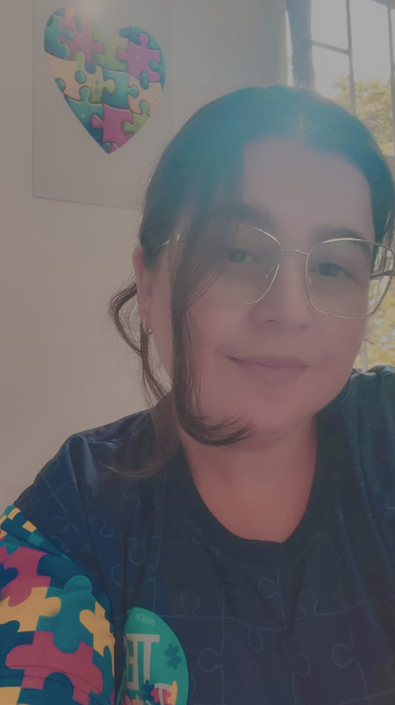
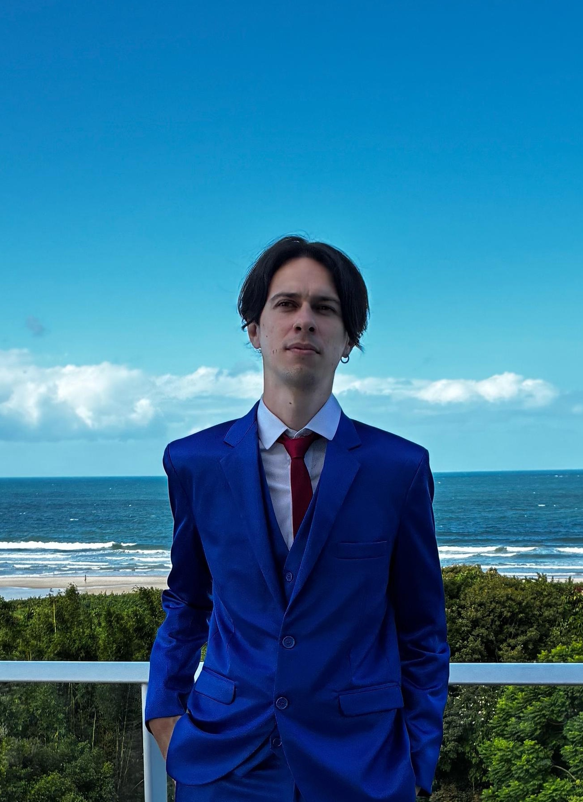
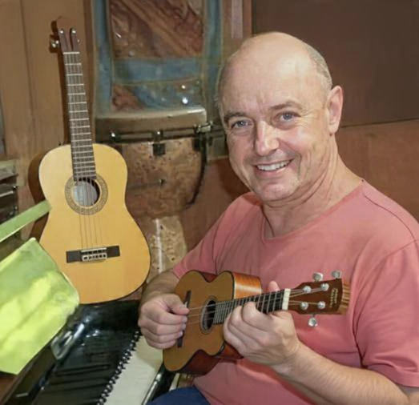
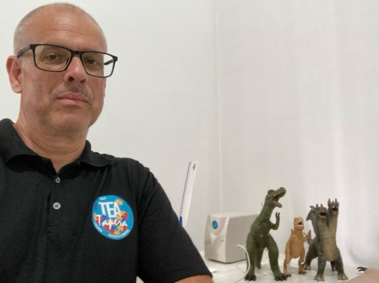
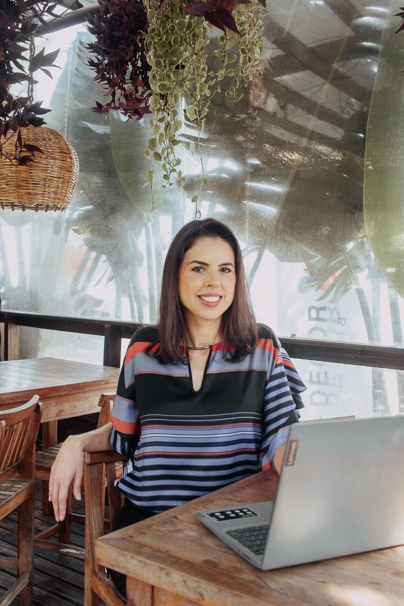
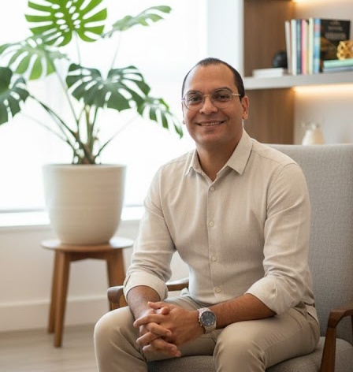

Conheça Nossos Colaboradores
Contamos com um corpo clínico e voluntário altamente qualificado, focado em intervenções baseadas em evidências e no desenvolvimento global do indivíduo. Conheça os especialistas que atuam no Projeto TEA Tapera para oferecer suporte terapêutico e inclusão social

Juçara Ribeiro
Secretária no Projeto TEA Tapera, responsável pelo acolhimento das famílias e organização dos atendimentos. Sou também mãe no projeto, vivendo diariamente a importância da inclusão e do afeto.
Formação Acadêmica
★ Estudante de Pedagogia

Cleysson Castro
Assistente terapêutico no atendimento de crianças com TEA e TDAH. Utilizo abordagens de TCC e ABA para fortalecer a autonomia e a qualidade de vida das crianças e suas famílias.
Formação Acadêmica
★ Graduando em Psicologia (9ª fase)
Arielli Cristina Martins
Atuo no Projeto TEA Tapera como psicóloga clínica, dedicada ao atendimento de crianças e adolescentes com Transtorno do Espectro Autista.
Formação Acadêmica
★ Graduação em Psicologia Clínica

Mário Belolli Júnior
Atuo como Musicoterapeuta voluntário no TEA Tapera e em outras instituições de Florianópolis, utilizando a música como ferramenta de desenvolvimento.
Formação Acadêmica
★ Pós-graduado em Gestão de Projetos, Mídias na Educação e Musicoterapia

Paulo Ricardo Ferreira Vogt
Voluntário no Projeto TEA Tapera desde setembro de 2024, integrando saberes clínicos ao projeto.
Formação Acadêmica
★ Psicanálise Clínica
★ Acupuntura Distal e Auricular

Caroline von Borowski
Nutricionista
Formação Acadêmica
★ Pós-graduada em Nutrição no Autismo & TDAH - Faculdade VP
★ Pós-graduada em Nutrição Materno-Infantil - Faculdade VP
★ Certificação em Terapia Alimentar - Academia Nutrição e Autismo
★ Certificação em Modulação Intestinal - Murilo Pereira
★ Certificação em Consultoria de Amamentação - Instituto Mame Bem
★ Bacharel em Nutrição - Faculdade Estácio de Sá

Cássio Mendes
Atuo há 5 anos na Clínica Harmonia e há 3 anos no Projeto TEA Tapera. Realizo perícias psicológicas para o Judiciário e busco atualização constante em grupos de estudo focados no autismo e nas infâncias.
Formação Acadêmica
★ Graduação em Psicologia - UNISUL
★ Pós-graduação em Avaliação Psicológica - Viver Mais Psicologia
★ Formação em Psicanálise (em conclusão) - Instituto Gerar
Christine
Atuo há mais de 10 anos na área do autismo, oferecendo intervenções de Psicomotricidade por meio do movimento e do brincar. Meu foco é o desenvolvimento da autonomia, interação social e expressão das crianças.
Na terapia da Psicomotricidade, desenvolve intervenções por meio do movimento, do brincar e das experiências corporais, favorecendo o desenvolvimento global de crianças com autismo. Seu trabalho é voltado à construção da autonomia, organização motora, atenção, interação social e expressão, sempre respeitando o tempo e as singularidades de cada criança.
Formação Acadêmica
★ Graduação em Educação Física - UFSC
★ Pós-graduação em Educação Inclusiva e Didática Psicopedagógica